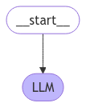

Episode 3: Using large language models
Last updated on 2025-01-15 | Edit this page
Overview
Questions
- What is a Large Language Model (LLM)?
- How do LLMs differ from traditional NLP models?
- What is the Transformer architecture, and why is it important for LLMs?
- How does prompt engineering influence LLM outputs?
- What are some real-world applications of LLMs?
- How can LLMs generate, classify, and summarise text?
Objectives
After following this lesson, learners will be able to:
- Understand what Large Language Models (LLMs) are and their role in NLP
- Explain the Transformer architecture and why it is foundational for LLMs
- Use prompt engineering to generate high-quality text responses
- Apply LLMs to real-world tasks like news article analysis
- Explore pre-trained LLMs and experiment with custom tasks
- Set up a chatbot and a simple RAG
- Understand the impact of LLMs in modern AI and language processing
Large Language Models (LLMs) are a hot and a big topic these days, and are continuously in the news. Everybody heard of ChatGPT, many tried it out for a variety of purposes, or even incorporated these tools in their daily work. But what are these models exactly, how do they work ‘under the hood’, and how can you make use of them in the best possible way?
In this episode, we will:
- Explore LLMs, which represent a significant advancement in natural language processing (NLP). We will begin by defining what LLMs are and touching on their foundational architecture, particularly the Transformer model, which allows the LLM to understand and generate human-like text.
- Through practical examples, you will discover how to work with these models for specific tasks with content generation.
- We’ll also discuss real-world applications of LLMs, such as analyzing news articles and generating insights from large amounts of text data.
This episode aims to equip you with both theoretical knowledge and practical skills, preparing you to harness the power of LLMs in your own projects and applications.
What are Large Language Models?
Large language models (LLMs) represent a significant advancement in artificial intelligence, designed to process and interpret large-scale natural language data to generate responses to user queries. By being trained on extensive datasets through advanced machine learning algorithms, these models learn the intricate patterns, structures and nuances of human language. This enables them to produce coherent and natural-sounding language outputs across various inputs. As a result, large language models are becoming increasingly essential in a range of tasks such as text generation, text summarisation, rewriting, question answering, and language translation.
The emergence of ChatGPT, powered by OpenAI’s advanced LLMs, has brought these capabilities into the mainstream. With ChatGPT, users interact through natural language, enabling seamless conversations and performing complex tasks across various sectors, like customer service, education, and content creation. Models like GPT-4, BERT, and LLaMA are also used across various applications; from chatbots, virtual assistants, text analysis, translation, summarisation, and more.
Notably, the success of ChatGPT and other LLM-driven applications highlights their versatility and potential to transform how humans interact with digital systems. These models continue to push the boundaries of what’s possible in human-computer interaction, offering a glimpse into a future where machines and humans communicate more naturally and effectively.
Timeline
The journey of large language models over the past decade highlights the rapid evolution and growing impact of AI in language processing:
2012: Significant advancements in deep learning architectures and access to larger datasets lead to the creation of the GPT (Generative Pre-trained Transformer) framework, marking a pivotal point in AI development.
2018: Google unveils BERT (Bidirectional Encoder Representations from Transformers), introducing a groundbreaking architecture that sets the stage for the next generation of large language models.
2020: OpenAI releases GPT-3, which, with its remarkable 175 billion parameters, establishes a new standard for performance in language-related tasks.
2022: The launch of ChatGPT marks a turning point by making GPT-3 and similar models easily accessible to the public via a web interface, significantly raising public awareness and interest in LLMs and generative AI.
2023: Open-source LLMs begin to deliver impressive outcomes with the introduction of models like Dolly 2.0, LLaMA, Alpaca, and Vicuna. Meanwhile, the release of GPT-4 pushes the envelope by setting new records for both parameter scale and overall performance.
Starting up a simple chat
Let’s explore how these LLMs work by doing a simple chat demonstration.
Imagine asking a computer a question and getting a human-like response. An LLM, like GPT-4, can generate responses that feel natural, informative, and tailored to your question by analyzing the context and meaning of your input. In the demonstration below, you’ll see how an LLM responds to a prompt and how it builds upon previous information to maintain the conversation.
Example Chat
User: “What’s the tallest mountain in the world?”
LLM: “The tallest mountain in the world is Mount Everest, which stands at 8,848 meters (29,029 feet).”
User: “How long does it take to climb it?”
LLM: “Climbing Mount Everest typically takes around two months, due to the acclimatization process needed to adjust to high altitudes. Expeditions often start from Base Camp in Nepal, where climbers spend several weeks preparing.”
User: “Could someone with no climbing experience try it?”
LLM: “Climbing Mount Everest is extremely challenging and requires significant training and experience due to the harsh conditions, high altitudes, and technical aspects of the climb. Most climbers spend years training and gaining experience on other mountains before attempting Everest.”
This example shows how LLMs can maintain context across multiple questions. Notice how the model connects information across each question, keeping the conversation relevant and informed.
This quick chat example introduces you to the conversational abilities of LLMs, demonstrating their ability to respond contextually, provide coherent answers, and follow up on earlier parts of the conversation.
How are LLMs different from other NLP techniques?
LLMs stand apart from traditional NLP techniques due to their scale, versatility, and reliance on deep learning models, especially Transformers. Here’s a breakdown of how they differ:
Scale of training data and parameters
- LLMs: Trained on massive datasets (trillions of words) and use billions of parameters, allowing them to learn language patterns, facts, and relationships at an unprecedented depth.
- Traditional NLP: Techniques like rule-based systems or smaller machine learning models rely on much smaller datasets, often requiring domain-specific training for each task (e.g., sentiment analysis or named entity recognition).
Model architecture
- LLMs: Use the Transformer architecture, particularly self-attention, to analyze relationships between words regardless of position. This allows them to capture long-range dependencies and context better than traditional models.
- Traditional NLP: Often use simpler models like bag-of-words, TF-IDF (term frequency-inverse document frequency), RNNs (recurrent neural networks), and LSTMs (long-short-term memory models), which treat words independently or consider only local context, missing the complex, global relationships.
Generalization vs. task-specific models
- LLMs: Can be applied across a wide range of tasks—summarization, translation, question answering, etc.—without the need for separate models for each. Fine-tuning makes them even more adaptable to specific needs.
- Traditional NLP: Typically requires developing or training a separate model for each task. For example, separate models for sentiment analysis, translation, and entity recognition.
Learning from unlabeled data
- LLMs: Leverage unsupervised or self-supervised learning during pretraining, enabling them to learn language patterns from raw text without human-labeled data.
- Traditional NLP: are often supervised models, relying on labeled data for training (e.g., labeled sentiment or part-of-speech tags), which can be costly and time-consuming to create at scale.
Context and language nuance
- LLMs: Excel at understanding context, tone, and nuance, due to their ability to weigh word relationships dynamically. This enables better handling of idioms, sarcasm, and ambiguous phrases.
- Traditional NLP: Struggles with complex language nuances, often producing more rigid or literal interpretations. Contextual understanding is limited, especially for longer sentences or paragraphs.
Adaptability and fine-tuning
- LLMs: Easily adaptable to new tasks or domains with fine-tuning, making them versatile across different applications.
- Traditional NLP: Less flexible, often requiring retraining from scratch or heavy feature engineering to adapt to new domains or tasks.
In short, LLMs represent a leap forward by combining scale, flexibility, and deep learning power, allowing for more accurate, nuanced, and versatile language processing compared to traditional NLP techniques.
What LLMs are good at
- Language generation: Creating coherent and contextually appropriate text, making them ideal for creative writing, chatbots, and automated responses.
- Summarization and translation: Quickly summarizing articles, books, and translating text between languages with reasonable accuracy.
- Information retrieval and answering questions: LLMs can recall and apply general knowledge from their training data to answer questions, though they don’t actually “know” facts.
- Sentiment and text classification: LLMs can classify text for tasks like sentiment analysis, spam detection, and topic categorization.
What LLMs struggle with
- Fact-based accuracy: Since LLMs don’t “know” facts, they may generate incorrect or outdated information and are prone to hallucinations (making up facts).
- Understanding context over long passages: LLMs can struggle with context over very long texts and may lose track of earlier details, affecting coherence.
- Mathematical reasoning and logic: Though improving, LLMs often find complex problem-solving and detailed logical reasoning challenging without direct guidance.
- Ethical and sensitive issues: LLMs may produce biased or offensive text based on biases present in the training data, making content moderation necessary in sensitive applications.
How do LLMs work?
So, how is it that you can chat with a model and receive responses that seem almost human? The answer lies in the architecture and training of Large Language Models (LLMs), which are powered by advanced neural networks that understand, generate, and even translate human language with surprising accuracy.
At the core of LLMs lies a framework known as the transformer; a concept already encountered in the previous episode. Transformers allow these models to process vast amounts of text and learn the structure and nuances of language. This setup enables LLMs not only to answer questions but also to predict, complete, and even generate coherent text based on the patterns they’ve learned.
LLMs are trained on large text datasets and later fine-tuned on specific tasks, which helps them adapt to a wide range of applications, from conversation to text classification. The result? A model that can chat, summarize, translate, and much more—all by leveraging these core mechanisms. LLM’s rely on the following key concepts:
- Transformers and self-attention: The transformer architecture, especially the self-attention mechanism, is at the heart of LLMs. Self-attention enables these models to understand the importance of each word in relation to others in a sequence, regardless of their position.
- Pretraining and fine-tuning: LLMs are first pre-trained on large text datasets using tasks like predicting the next word in a sentence, learning language patterns. They are then fine-tuned on specific tasks (e.g., translation, summarization) to enhance performance for targeted applications.
- Generative vs. discriminative models: LLMs can be applied to both generative tasks (e.g., text generation) and discriminative tasks (e.g., classification).
In practice, this attention mechanism helps LLMs produce coherent responses by establishing relationships between words as each new token is generated. Here’s how it works:
Understanding word relationships. Self-attention enables the model to weigh the importance of each word in a sentence, no matter where it appears, to make sense of the sentence as a whole.
Predicting next words based on context. With these relationships mapped out, the model can predict the next word in a sequence. For example, in “The fox,” self-attention allows the model to anticipate that “jumps” or “runs” might come next rather than something unrelated like “table.”
Structuring responses. As each word is generated, the model assesses how each new token impacts the entire sentence, ensuring that responses are relevant, logically sound, and grammatically correct. This ability to “structure” language is why LLMs can produce responses that are contextually meaningful and well-organized.
A zoo of Large Language Models
The era of Large Language Models gained momentum in 2018 with the release of Google’s BERT. Since then, many companies have rapidly developed newer and more powerful models. Among these are GPT (OpenAI), Llama (Meta), Mistral (Mistral AI), Gemini (Google DeepMind), Claude (Anthropic), and Grok (xAI). Some are open-source or more transparent than others, revealing their architectures, parameter counts, or training data and the collection thereof.
A list of LLMs: - GPT - OpenAI - Llama - Meta - Mistral / Mixtral - Mistral AI (founded by former engineers from Google DeepMind and Meta) - Gemini - Google DeepMind - Claude - Anthropic - (founded by former OpenAI employees) - Grok - xAI (Elon Musk)
Training a large language model is extremely resource intensive. For example, llama’s model Llama 3.1 405B is a model that has 405 billion parameters. It was trained on 15 trillion tokens, uses 31 million GPU hours (H100 gpus), and emitted almost 9000 tons of CO_2 (for the training process only).
Inference also consumes considerable resources and has a significant environmental impact. Large models require large memory for storing and loading the model weights (storing weights alone can require hundreds of gigabytes), and need high-performance GPUs to achieve reasonable runtimes. As a result, many models operate on cloud-based servers, increasing power consumption, especially when scaled accomodate large numbers of users.
Which one to chose when?
With so many available models the question arises “which model you should use when”? One thing to consider here is whether you want to use an open source model or not. But another important aspect is that it depends on the task at hand. There are various leaderboards (for example: HuggingFace that track which tasks specific models are good at, based on widely used benchmarks. Also, which language are you using? Most models are fully trained on English, not many models are trained on Dutch text. So if you are using Dutch texts, you may want to look for a model that is trained on or finetuned for Dutch. Additionally, some LLMs are multimodal models, meaning they can process various forms of input; text, images, timeseries, audio, videos and so on.
Building a chatbot
It is time to start using an LLM! We are not going to train our own LLM, but use Meta’s open source Llama model to set up a chatbot.
Starting Ollama
Ollama is a platform that allows users to run various LLM locally on your own computer. This is different from for example using chatgpt, where you log in and use the online api. ChatGPT collects the input you are providing and uses this to their own benefit. Running an LLM locally using Ollama thus preserves your privacy. It also allows you to customize a model, by setting certain parameters, or even by finetuning a model.
To start Ollama:
ollama serveNext, download the large language model to be used. In this case use the smallest open source llama model, which is llama3.1:8b. Here 3.1 is the version of the model and 8b stands for the number of parameters that the model has.
!ollama pull llama3.1:8bIn general, a bigger version of the same model (such as Llama3.1:70b) is better in accuracy, but since it is larger it takes more resources to run and can hence be too much for a laptop.
Import the packages that will be used:
Create a model instance
Here, model defines the LLM to be used, which is set to
the model just downloaded, and temperature sets the
randomness of the mode, using the value zero ensures that repeating a
question will give the same model output (answer).
llm = ChatOllama(model="llama3.1:8b", temperature=0)Now that the model is set up, it can be invoked - ask it a question.
PYTHON
question = "When was the moon landing?"
chatresult = llm.invoke([HumanMessage(content=question)])
print(chatresult.content)Challenge
Play around with the chat bot by changing the questions. - How is the quality of the answers? - Is it able to answer general questions, and very specific questions? - Which limitations can you identify? - How could you get better answers?
Challenge (continued)
This Llama chat bot, just like ChatGPT, is quite generic. It is good at answering general questions; things that a lot of people know. Going deeper and asking very specific questions often leads to vague or inaccurate results.
Use context
To improve on what to expect the LLM to return, it is also possible to provide it with some context. For example, add:
PYTHON
context = "You are a highschool history teacher trying to explain societal impact of historic events."
messages = [
SystemMessage(content=context),
HumanMessage(content=question),
]The benefit here is that your answer will be phrased in a way that fits your context, without having to specify this for every question.
Use the chat history
With this chatbot the LLM can be invoked to generate output based on the provided input and context. However, what is not possible in this state, is to ask followup questions. This can be useful to refine the output that it generates. The next step is therefore to implement message persistence in the workflow.
PYTHON
from langgraph.checkpoint.memory import MemorySaver
from langgraph.graph import START, MessagesState, StateGraph
from IPython.display import Image, displayThe package LangGraph is a library that is designed to build LLM agents using workflows represented as graphs. The workflows you create consist of connected components, which allows you to build multi-step processes. The workflow graphs can be easily visualised which makes them quite insightful. LangGraph also has a build-in persistence layer, exactly what we want right now!
First, define an empty workflow graph with the StateGraph class with the MessageState schema (a simple schema with messages as only key)
Then define a function to invoke the llm with a message
PYTHON
def call_llm(state: MessagesState):
response = llm.invoke(state["messages"])
return {"messages": response}Then add the call_llm function as a node to the graph and connect it with an edge to the start point of the graph. This start node sends the user input to the graph, which in this case only contains the LLM element.
Initialise a memory that will preserve the messages state in a dictionary while going though the graph multiple times asking followup questions.
Then compile and visualise the graph with the memory as checkpoint.
PYTHON
graph = workflow.compile(checkpointer=memory)
display(Image(graph.get_graph().draw_mermaid_png())) Define a memory id for the current conservation.
Then call the workflow with memory we created with the original question
PYTHON
question = 'Who landed on the Moon?'
messages = [HumanMessage(question)]
output = graph.invoke({"messages": messages}, config)
output["messages"][-1].pretty_print()The question and answer are now saved in the graph state with this config, and followup questions and answers with the same config will be added to it.
Everything that is saved can be found in the config state
The workflow can now be used to ask followup questions without having to repeat the original question, and based on the previous generated answer.
Retrieval Augmented Generation - Build a RAG
A chatbot tends to give quite generic answers. A more specific chatbot can be made by building a Retrieval Augmented Generation agent. This is an information that you yourself provide with a knowledge base: a large number of documents. When prompted with a questions, the agent first retrieves relevant sections of the data that is in the knowledge base, and then generates and answer based on that data. In this way you can build an agent with very specific knowledge.
The simplest form of a rag consists of two parts, a retriever and a generator. The retriever part will collect data from the provided data, so first a knowledge base has to be created for the retriever.
To generate text in the RAG the trained Llama model will be used, which works well for English text. Because this model was not trained on Dutch text, the RAG will work better for an English knowledge base.
Three newspaper pages will be used for the example RAG, these are pages from a Curacao newspaper. This is a Dutch newspaper with an additional page in English. The text versions of the newspapers can be downloaded to only get these specific English pages. Save them in a folder called “rag_data” for further processing: - page1 - page2 - page3
The knowledge base - a vector store
Language models all work with vectors - embedded text. Instead of saving text, a the data has to be stored in embedded versions in a vector store, where the retriever can shop around for the relevant text.
There a number of packages to be used in this section to build the RAG.
PYTHON
import os
from IPython.display import Image, display
from typing_extensions import List, TypedDict
from langchain_ollama import ChatOllama, OllamaEmbeddings
from langchain_core.messages import HumanMessage
from langchain_core.documents import Document
from langchain_core.vectorstores import InMemoryVectorStore
from langchain_text_splitters import RecursiveCharacterTextSplitter
from langgraph.graph import START, StateGraph
from langchain_nomic.embeddings import NomicEmbeddingsDefine the large language model to be used to generate an answer based on provided context:
Define the embeddings model, this is the model to convert our knowledge base texts into vector embeddings and will be used for the retrieval part of the RAG:
In the text files, the articles are split by ‘—’. This information can be used to store the individual articles into a list. Store the filename of the articles in a list as well, so that one can find easily in from which file a text snippet was taken.
PYTHON
dir = "./rag_data"
articles = []
metadata = []
# Iterate over files and add individual articles and corresponding filenames to lists
for file in os.listdir(dir):
file_path = os.path.join(dir, file)
with open(file_path, "r") as f:
content = f.read().split('---')
articles.extend(content)
metadata.extend([file_path] * len(content))The generator will in the end provide an answer based on the text snippet that is retrieved from the knowledge base. If the fragment is very long, it may contain a lot of irrelevant information, which will blur the generated answer. Therefor it is better to split the data into smaller parts, so that the retriever can collect very specific pieces of text to generate an answer from. It is useful to keep some overlap between the splits, so that information does not get lost because of for example splits in the middle of a sentence.
PYTHON
text_splitter = RecursiveCharacterTextSplitter(
chunk_size=500, chunk_overlap=50
)
documents = text_splitter.create_documents(articles, metadatas=[{'filename': file} for file in files])
print(documents)This text splitter splits text based on the defined character chunk size, but also takes into account spaces and newlines to slit in “smart” chunks, so the chunks will not be exactly of length 500.
Finally, convert each text split into a vector, and save all vectors in a vector store. The text is converted into embeddings using the earlier defined embeddings model.
PYTHON
vectorstore = InMemoryVectorStore.from_texts(
[doc.page_content for doc in documents],
embedding=embeddings,
)The contents of the vectorstore can be printed as
It shows that for each text fragment that was given, a vector is created and it is saved in the vectorstore together with the original text.
Setting up the retriever and generator
Define the structure of a dictionary with the keys
question, context, and
answer.
Define the retriever function of the RAG. It takes in the question and does a similarity search in the created vectorstore and returns the text snippets that were found to be similar. The similarity search converts the question into an embeddings vector and uses the cosine similarity to determine the similarity between the question and snippets. It then returns the top 4 snippets with the highest cosine similarity score. The snippets are returned in the original text form, i.e. the retrieved vectors are transformed back into text.
PYTHON
def retrieve(state: State):
"Retrieve documents that are similar to the question."
retrieved_docs = vectorstore.similarity_search(state["question"], k=4)
return {"context": retrieved_docs}Define the generator function of the RAG. In this function a prompt is defined for the RAG using the context and question. The large language model (the Llama model, defined above) is then invoked with this question and generates an answer for the provided prompt, which is returned as the answer key of the dictionary.
PYTHON
def generate(state: State):
docs_content = "\n\n".join(doc.page_content for doc in state["context"])
rag_prompt = """You are an assistant for question-answering tasks.
Here is the context to use to answer the question:
{context}
Think carefully about the above context.
Now, review the user question:
{question}
Provide an answer to this questions using only the above context.
Use 10 sentences maximum and keep the answer concise.
Answer:"""
rag_prompt_formatted = rag_prompt.format(context=docs_content, question=State["question"])
generate = llm.invoke([HumanMessage(content=rag_prompt_formatted)])
return {"answer": generate.content}Build the workflow
The retriever and generator are combined into a workflow graph. The
workflow is defined as a StateGraph that uses the dictionary structure
(with the keys question, context, and
answer) defined above. The retriever and generator are
added as nodes, and the two are connected via the edge. The retrieve is
set as the start point of the workflow, and finally the graph is
compiled into an executable.
workflow = StateGraph(State)
workflow.add_node("retrieve", retrieve)
workflow.add_node("generate", generate)
workflow.add_edge("retrieve", "generate")
workflow.set_entry_point("retrieve")
graph = workflow.compile()PYTHON
display(Image(graph.get_graph().draw_mermaid_png()))https://scikit-learn.org/1.5/modules/grid_search.html
That’s it! The RAG can now be asked questions. Let’s see what it can tell about the moon landing:
This is quite a specific answer. It can be seen why by looking at the text snippets that were used:
print(response["context"])While a general chatbot uses all the information in the material that it was trained on, the RAG only uses the information that was stored in the vectorstore to generate the answer.
Challenge
Try generating more answers with the RAG based on other questions, perhaps also looking at the newspaper texts that are used. What stands out?
For example: - The RAG returns in some cases that no answer can be generated on the context it was provided with - For some questions, the LLM returns that it cannot provide an answer because of safety precautions that are inherent to the LLM used, such as information about violent acts.
This is the simplest form of a RAG, with a retriever and a generator. However, one can make the RAG more complex by adding more components and options to the workflow, for example one to check the relevance of the retrieved documents, removing those that turn out to be irrelevant to be used for the answer generation, or having a component that can reformulate the question. Another example is to add a hallucination checker step after the generator that checks if the generated answer can actually be found in the provided context.
Pitfalls, limitations, privacy
While LLMs are very powerful and provide us with many great possibilities and opportunities, they also have limitations.
- Training data: LLMs are trained on large data sets. These are often
collected from the internet and books, but these come with downsides
- They have a date cutoff; LLMs are trained on a static data set, meaning they are trained on information up to a certain date. They therefor do not have the latest information. They are definitely not useful for recent news events (often they mention this), but also lack behind in for example technological advancements. Always consider how old the model is that you are using.s
- There is no fact checking involved in the training data. If the training data contains a lot of incorrect information or fake news, this will affect the answers generated.
- The training data is often biased, including social and cultural biases. This can lead to harmful responses that are stereotyping or racist. Training LLMs does involve a human review for fine-tuning the models, such that they are prevented from answering questions on illegal activities, political advice, advice on harming yourself or others, or generating violent or sexual content. When for example prompted with questions about politics it does provide generic factual information, but will also say that it will not give advice or opinionated answers.
- For GPT-4, there is no exact information provided as to which data it is trained on, meaning that the data might be breaking privacy laws or copyright infringement.
- The data an LLM is trained on is generic, resulting in that it is not good at generating answers for specialised questions. There are however already a lot of models that are finetuned for specific fields.
- Language: LLMs are primarily trained on data collected from the internet, resulting in that they are ‘best’ in the most spoken languages. ChatGPT is trained on many languages, but languages that are less widely spoken will automatically have smaller data to train on, which makes the LLM less accurate in these languages.
- Multi-step thinking: LLMs are generally not good at multi-step thinking. They are very good at providing bullet point lists of information, but reasoning like humans do, drawing a conclusion from combined logic is something they are not good at (yet).
- Hallucinations: LLMs tend to hallucinate. When it ‘does not know the answer’, it will often still try to provide an answer. You should therefore not blindly use the answers from an LLM, but still check the given information yourself.
- Privacy: when using a language model locally, such as done above with Llama, your privacy is preserved. The model is only on your laptop, and the data you provide is not uploaded to any server. But when you for example use ChatGPT via the web interface, there is no privacy. Any information you provide, questions, provided context and so on will be used by ChatGPT. It will be used (ao) for improving the model, which may be considered a good thing, but other things it is used for are not necessarily known. This means that you should be careful in what you provide to the LLM. Never provide sensitive information or private data to an LLM that you do not run fully locally.
Key points to remember
- Transformer models power LLMs: The Transformer architecture and its self-attention mechanism allow LLMs to handle long-range dependencies in text effectively.
- LLMs excel at multiple tasks: From text generation to classification and summarisation, LLMs like Llama are versatile and perform well on various NLP tasks.
- Prompt engineering is crucial: Designing effective prompts can significantly improve the quality of outputs from LLMs, especially for creative tasks like text generation and translation.
- Real-world use cases: LLMs can be applied to real-world problems like news classification, summarisation, and headline generation, improving efficiency in content management and delivery.